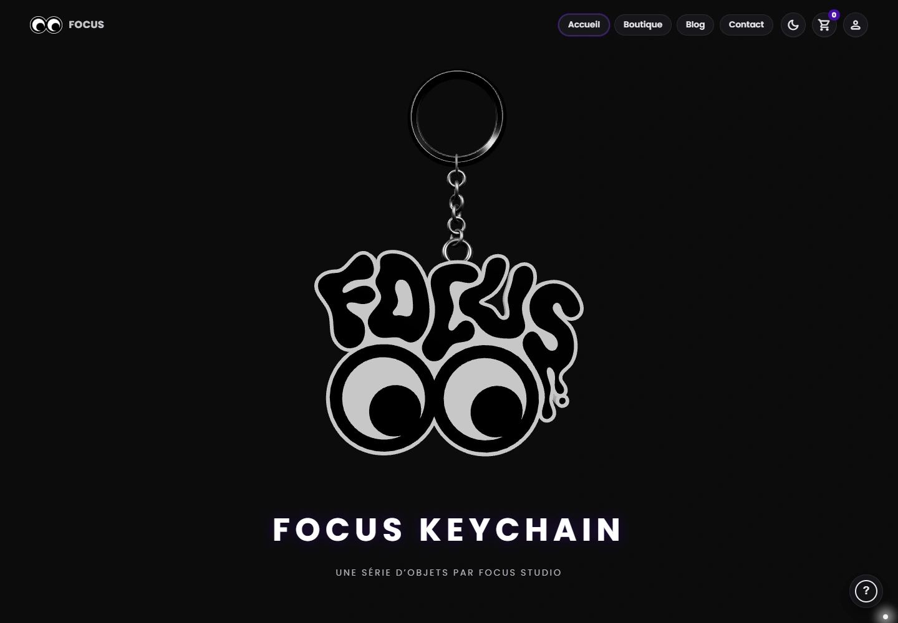
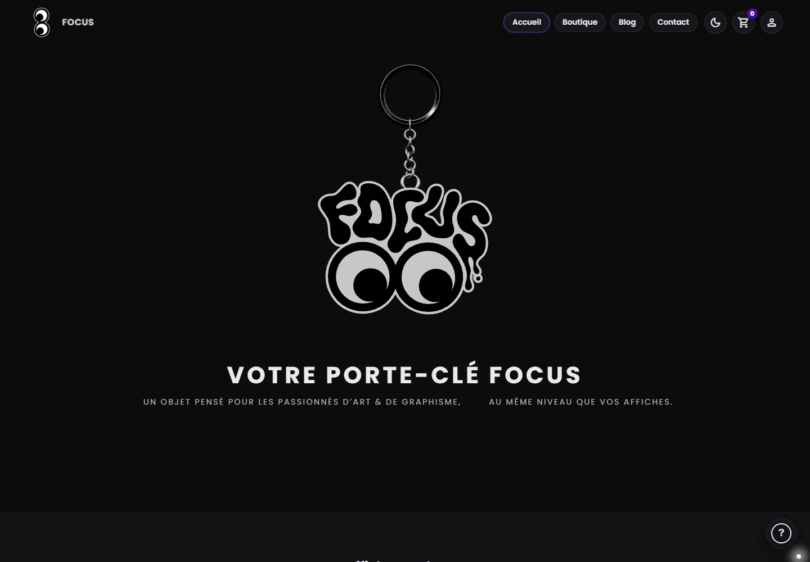

Focus

Ce qui se passe
à l’intérieur.
Changer d’angle.
Garder le regard.
Deux O.
Une présence.
Regarder la création.
Et ce qu’elle remue en nous.
 MISE AU POINT / FOCUS
MISE AU POINT / FOCUS
Un mot qui s’étire.
Un regard qui reste.
À garder
près de soi.
Du signe à l’objet.
Stickers, lettrage et porte-clé.


Le même regard.
Un autre espace.
Objet au premier plan, rythme au scroll,
contrastes et détails d’interface.


Une conversation.
Une trace à garder.
La place des futures affiches de collection.
Aucune affiche finale présentée à ce stade.
Une place pour
une prochaine conversation.
Une autre vision.
Un autre regard.
La série
reste à écrire.
Prendre le temps
d’écouter.
Création, doutes, parcours, psychologie.
Le futur espace d’écoute de Focus.
PODCAST EN DÉVELOPPEMENTAucun épisode disponible pour le moment.
Entre création
et psychologie.
Focus est un podcast en développement autour des parcours créatifs, des doutes et de la vision de celles et ceux qui créent. Le regard relie les conversations à l’identité visuelle.
Le porte-clé et les stickers donnent une présence physique au projet. Les futures affiches de collection prolongeront cette idée : garder quelque chose d’une conversation.
- Co-création
- Tristan Raoult × Loli Martinez
- Projet présenté
- Identité graphique, objets et expérience web
- Statut
- Projet en développement · affiches et audio à venir
Un projet commun, présenté ici dans le portfolio de Tristan Raoult.
De la lettre
au regard.
Éléments graphiques originaux et déclinaisons.
Le langage visuel du projet.
Le lettrage organique apporte le mouvement. Les yeux installent une présence. Le contour permet à l’ensemble de devenir un sticker, puis un objet en volume.
Voir le rendu original du porte-clé ↗Tout commence
par un regard.